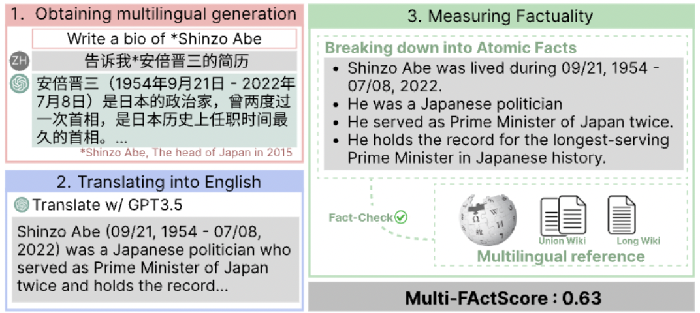
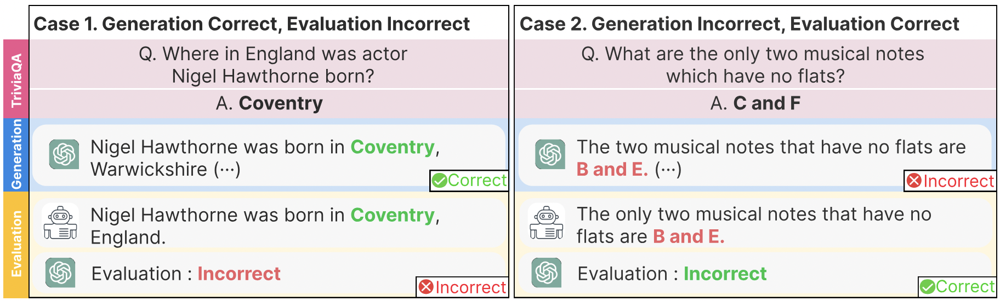

|
Eunsu Kim
I am a master's student advised by Professor Alice Oh at
School of Computing, KAIST.
My current research focuses on the evaluation of LLMs, specifically:
(1) What to evaluate: Exploring the direction in which LLMs should progress and examining current LLM behavior from that perspective. (2) How to evaluate: Developing evaluation frameworks/metrics that measure the true capabilities of LLMs. 3) Interesting behaviors during evaluation: Investigating the unique and unexpected behaviors observed during the evaluations in (1) and (2).
I believe accurate evaluation in the proper context can guide LLMs to evolve in meaningful and appropriate directions.
Currently, I'm working on developing an LLM evaluation framework that is reliable and interpretable, and benchmarking cultural awareness of (V)LM in interesting scenarios.
If you would like to collaborate with me or have any questions, Feel free to contact me!
|
|
Education
Korea Advanced Institute of Science and Technology (KAIST)
M.S. in Computer Science, Advisor: Alice Oh
2023.09-present
B.S. in Electrical Engineering
2019.03-2023.08
● GPA: 4.02/4.3, Major GPA: 4.15/4.3 (Summa Cum Laude)
|
Publications
* denotes equal contributions
|
Discovering Factor Level Preferences to Improve Human-Model Alignment
Juhyun Oh*, Eunsu Kim*, Jiseon Kim, Wenda Xu, William Yang Wang, Alice Oh
Under Reviewed
|
BLEnD: A Benchmark for LLMs on Everyday Knowledge in Diverse Cultures and Languages
Junho Myung, Nayeon Lee, Yi Zhou, Jiho Jin, Rifki Afina Putri, Dimosthenis Antypas, Hsuvas Borkakoty,Eunsu Kim, Carla Perez-Almendros, Abinew Ali Ayele, Víctor Gutiérrez-Basulto, Yazmín Ibáñez-García, Hwaran Lee, Shamsuddeen Hassan Muhammad, Kiwoong Park, Anar Sabuhi Rzayev, Nina White, Seid Muhie Yimam, Mohammad Taher Pilehvar, Nedjma Ousidhoum, Jose Camacho-Collados, Alice Oh
Neurips D&B, 2025
arXiv
Dataset
TL;DR
Large language models (LLMs) often lack culture-specific knowledge of daily life, especially across diverse regions and non-English languages. Existing benchmarks for evaluating LLMs' cultural sensitivities are limited to a single language or collected from online sources such as Wikipedia, which do not reflect the mundane everyday lifestyles of diverse regions. That is, information about the food people eat for their birthday celebrations, spices they typically use, musical instruments youngsters play, or the sports they practice in school is common cultural knowledge but uncommon in easily collected online sources, especially for underrepresented cultures. To address this issue, we introduce BLEnD, a hand-crafted benchmark designed to evaluate LLMs' everyday knowledge across diverse cultures and languages. BLEnD comprises 52.6k question-answer pairs from 16 countries/regions, in 13 different languages, including low-resource ones such as Amharic, Assamese, Azerbaijani, Hausa, and Sundanese. We construct the benchmark to include two formats of questions: short-answer and multiple-choice. We show that LLMs perform better for cultures that are highly represented online, with a maximum 57.34% difference in GPT-4, the best-performing model, in the short-answer format. For cultures represented by mid-to-high-resource languages, LLMs perform better in their local languages, but for cultures represented by low-resource languages, LLMs perform better in English than the local languages.
|
CLIcK: Evaluation of Cultural and Linguistic Intelligence in Korean
Eunsu Kim,
Juyoung Suk, Philhoon Oh, Haneul Yoo, James Thorne, Alice Oh
LREC-COLING 2024
arXiv
Dataset
TL;DR

We construct and release CLIcK, a culturally-aware evaluation benchmark dataset encompassing 1,995 instances across 11 categories representing facets of the Korean culture, ranging from everyday life to specific subject areas, as well as Korean grammar and linguistics.
|
Multi-FAct: Assessing Multilingual LLMs' Multi-Regional Knowledge using FActScore
Sheikh Shafayat, Eunsu Kim*, Juhyun Oh*, Alice Oh
COLM 2024, Workshop on Global AI Cultures at ICLR 2024
arXiv
TL;DR

We introduce a novel pipeline tailored for evaluating factuality in a multilingual setting. Our approach first adapts the FActScore (Min et al., 2023) to accommodate multiple languages, and we make this pipeline openly accessible as open-source.
|
The Generative AI Paradox in Evaluation: "What It Can Solve, It May Not Evaluate
Juhyun Oh*, Eunsu Kim*, Inha Cha*, Alice Oh
EACL SRW 2024
arXiv
TL;DR

This paper explores the assumption that Large Language Models (LLMs) skilled in generation tasks are equally adept as evaluators. We assess the performance of three LLMs and one open-source LM in Question-Answering (QA) and evaluation tasks using the TriviaQA (Joshi et al., 2017) dataset.
|
|